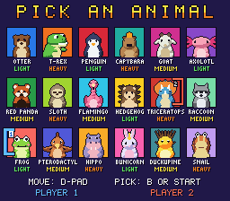
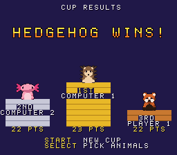

Projects
Work with an outcome to finish.
- Sparktale
- Wellness Coach
- Prepare the garden for winter
A frost checklist belongs with the winter preparation project.
Fun stuff
A movie picker and a kart game, then how I organize my notes and what I am reading.
Movie Night keeps a list of films and series and draws one title from the hat for the evening.
Couch Kart is an original two-player kart racer that I built as a Super Nintendo game.


I use Tiago Forte's PARA method: Projects, Areas, Resources and Archive. Each has a different job.
Work with an outcome to finish.
A frost checklist belongs with the winter preparation project.
Responsibilities I keep tending.
Plant care records stay useful across seasons.
Material I may draw on later.
An article on soil care can help with a future project.
Finished or inactive material.
Keep the history when a project ends, and move it out of the daily view.
I use a page-saving extension to capture material. To try this structure, take one saved article, add why it matters, and put it beside the work it could help.
A note can move when its use changes. Start with one project you already have.
Reading
A small selection, updated Oct '26.
Reading now
Rob Fitzpatrick
Customer discoveryNext up
Melissa Perri
Product strategyReading now
Mary Shelley
Classic fictionJust finished
Fyodor Dostoyevsky
Classic fictionBooks I have finished. The category tells you the subject; the Forte books above are my recommendation for organizing knowledge.